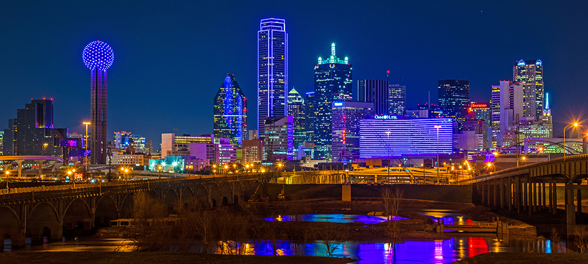

Austin

Home
Austin
Houston
Dallas
Dallas facts
City population: 1,304,379
Year the city was incorporated: 1856
Region of Texas the city is located: North
Classification of the city: City
Average income level of the city compared to the rest of the state: Higher